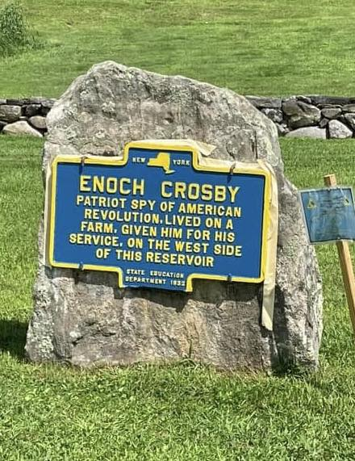

Enoch Crosby
Patriot spy of the American Revolution. Apprentice shoemaker, infantry private, double agent for John Jay’s committee on Loyalist conspiracies, postwar farmer and Southeast town supervisor — and the man whom popular tradition has long held to be the model for Harvey Birch in James Fenimore Cooper’s 1821 novel The Spy.


ENOCH CROSBY
Patriot Spy of the American Revolution. Was associated with Carmel. His farm was nearby and he is buried at Gilead. One mile from here.
About this Marker
Enoch Crosby (January 4, 1750 – June 26, 1835) was born at Harwich on Cape Cod, the son of Thomas and Elizabeth Crosby. The family moved to the southern frontier of Dutchess County — the territory that would later become Putnam County — when Enoch was still an infant, and settled in what is now the Town of Southeast. The Crosbys were poor; at sixteen, Enoch left home to apprentice with a shoemaker in Kent, New York, a few miles to the west, where he learned his trade. The apprenticeship ran from 1766 until his twenty-first birthday in 1771. By the spring of 1775, when news of Lexington and Concord reached the Hudson Valley, he was at work as a journeyman shoemaker in Danbury, Connecticut.
Crosby enlisted in the Continental cause within days of the Lexington alarm. Under Col. David Waterbury, he marched north as part of the American invasion of Canada in 1775, witnessing the surrender of British forces at Fort St. Jean on the Richelieu River and the fall of Montreal in November. With his enlistment expiring before the Battle of Quebec in December, he turned south, was discharged at Albany after eight months in arms, and returned to making shoes.
The Committee for Detecting and Defeating Conspiracies
In late August 1776 Crosby left his bench again and set out south for the army’s encampment at White Plains in Westchester County. The road was thick with rumor of British movement and Loyalist organizing. Somewhere on the way — the surviving accounts differ on the exact crossroads — Crosby was mistaken for a Loyalist sympathizer by a stranger who confidentially invited him to a clandestine meeting of like-minded men. Crosby played along, took down the names of the gathering, and reported what he had learned to a member of the local Committee of Safety. That night the Loyalists were arrested.
The episode caught the attention of John Jay, then chairman of the Committee for Detecting and Defeating Conspiracies, the New York body responsible for identifying and disrupting Loyalist networks across the lower Hudson Valley. Jay saw in Crosby’s casual encounter a useful pattern, and recruited him for full-time work in what the early historian Louis S. Patrick later called the “secret service” of the Revolution. Popular accounts of the recruitment (preserved in nineteenth-century retellings rather than in any 1776 document) report Jay telling Crosby that “our greatest danger lies in our secret enemies” and that “a man of your special abilities is entitled to greater credit than a regular soldier.” According to the same tradition, Crosby took the work on one condition: that if he were killed, his name would be cleared with his family, who could not be told what he was doing. From August 1776 until the spring of 1777 he moved through Dutchess, Putnam, and Westchester counties under cover of his trade, posing as a Loyalist craftsman seeking to join the British cause and reporting on the men he met and the schemes they laid. He used several aliases — John Brown, John Smith, Levi Foster, Jacob Brown — and was repeatedly captured by Patriot militia who took him at face value as a Tory, only to be released, sometimes melodramatically, by prior arrangement with Jay’s committee. His own narrative records escapes from a Patriot detention at the Old Dutch Church in Fishkill and from other tight corners across the Neutral Ground.
Crosby’s work overlapped directly with that of Col. Henry Ludington of the Fredericksburgh Precinct, whose regiment patrolled the same territory and whose own intelligence network fed Jay’s committee. The two men knew each other; the early biographies of both place them in the same wartime correspondence and the same circle of Patriot operatives running from the Hudson east to the Connecticut line.
After the war: farmer, judge, town supervisor
Crosby returned to civilian life after 1780. He and his brother Benjamin bought 276 acres of farmland near Brewster from the New York Commission of Forfeiture — the state body that confiscated Loyalist estates and resold them to Patriots after the war — on the strength of Crosby’s wartime service. He married Sarah Kniffen in 1785; after her death in 1811 he married Margaret Green, who died in 1825. The 1932 marker that bears his name stands today in front of the Putnam County Courthouse in Carmel — about a mile, the marker accurately notes, from his burial place at the Gilead Cemetery, where he lies next to Sarah among at least two dozen Revolutionary War veterans interred there. He served as a justice of the peace, then as associate judge of the Putnam County court, and in 1812–13 as town supervisor of Southeast, taking office just in time to administer the town’s war effort during the War of 1812. He lived long enough to be lionized in his old age, and to sit for his portrait in 1830 (above) at the hand of William Jewett, partner in the New York portrait firm of Waldo & Jewett. The painting hangs today in the National Portrait Gallery in Washington.
On October 15, 1832, at age eighty-two, Crosby walked into the Putnam County Court of Oyer and Terminer and dictated a twelve-page deposition recounting his Revolutionary services. The 1832 federal pension act required veterans to provide sworn accounts of their service in order to claim a pension; the deposition Crosby gave that day is the most authoritative surviving primary source for what he actually did during the war. (The deposition was published in full in 1966 by James H. Pickering in the New-York Historical Society Quarterly.) Near the end of his life Crosby wrote, in a letter, “having been spared to enjoy these blessings — independence and prosperity — for half a century and see them still continued, I can lay down my weary and worn out limbs in peace and happiness.” He died on June 26, 1835. The Putnam County chapter of the Daughters of the American Revolution carries his name today.
Cooper, Harvey Birch, and the popular Crosby
Crosby’s name attached itself to a particular kind of literary fame thanks to James Fenimore Cooper’s 1821 novel The Spy: A Tale of the Neutral Ground, which made the bestseller of its decade out of a Westchester peddler named Harvey Birch — a self-effacing, often-misunderstood Patriot operative who runs intelligence across the same lower Hudson Valley terrain Crosby knew. Cooper later said he had heard the underlying anecdote from John Jay himself; Crosby may have been the basis for the character of Birch, though Cooper, until his death in 1851, declined to confirm any specific identification.
In 1828, seven years after Cooper’s novel appeared, the New York publisher H. L. Barnum brought out a slender book under the elaborate title The Spy Unmasked; or, Memoirs of Enoch Crosby, alias Harvey Birch, the Hero of Mr. Cooper’s Tale of the Neutral Ground — Being an Authentic Account of the Secret Services Which He Rendered His Country During the Revolutionary War. (Taken from His Own Lips, in Short-Hand.) Barnum’s book has been the principal source of the popular Crosby legend ever since — embellished, dramatized, and not always accurate, but rooted in conversations Barnum reports having had directly with the elderly Crosby. It went through multiple editions and was reprinted with additional illustrations in 1886 by the Fishkill Weekly Times. The full 1886 reprint is freely available online (linked below).
The marker
The marker that bears Crosby’s name was erected in 1932 by the New York State Education Department, part of the same statewide roadside-marker program that produced the Col. Ludington and DeForest Corners markers in Patterson and hundreds of similar signs across New York. The 1932 marker is not the only memorial to Crosby at this site: a few feet away stands the 1914 Ferdinand Hopkins monument, a granite memorial with a much longer inscription that explicitly identifies Crosby as “(Harvey Birch)” and quotes the rhetoric of early-twentieth-century veneration: “He braved danger and death that this land might be free … without hope of reward.” A third marker at the same intersection, erected by the Town of Carmel in 2000 for the town’s sesquicentennial, also names him. Together the three markers form a small constellation of Putnam County’s memorialization of its most famous spy.
40 Gleneida Avenue (NY 52)
Carmel, NY 10512
(41.426150°, −73.678817°)
Sources
- On-site photograph of the New York State Education Department marker (1932).
- Portrait of Enoch Crosby by William Jewett, 1830, oil on wood. National Portrait Gallery, Smithsonian Institution, accession number NPG.77.23 (public domain).
- Enoch Crosby Pension File No. S.10505, Collection M-804, Pension and Bounty Land Application Files, New York, National Archives and Records Administration — primary source for Crosby’s Revolutionary service. The October 15, 1832 deposition is reprinted verbatim in James H. Pickering, “Enoch Crosby, Secret Agent of the Neutral Ground: His Own Story,” New York History 47 (January 1966): 61–73.
- H. L. Barnum, The Spy Unmasked; or, Memoirs of Enoch Crosby, alias Harvey Birch, the Hero of Mr. Cooper’s Tale of the Neutral Ground — Being an Authentic Account of the Secret Services Which He Rendered His Country During the Revolutionary War. (Taken from His Own Lips, in Short-Hand.) (New York: J. & J. Harper, 1828; reprinted with additional appendix and illustrations by the Fishkill Weekly Times, 1886). Internet Archive.
- Enoch Crosby, The Spy (Cooper novel), Putnam County, New York, and List of New York State Historic Markers in Putnam County, New York — Wikipedia articles.
- “Enoch Crosby: Revolutionary War Spy — and Southeast Town Supervisor,” New York State Museum, NYSED — primary source for Crosby’s 1812–13 term as Southeast town supervisor.
- “Revolutionary History,” Putnam County Revolutionary New York 250 (putnamcountyny.gov/rev250) — primary source for the marker location at the historic Putnam County Courthouse, 40 Gleneida Avenue, and Crosby’s burial site at Gilead Cemetery, 29 Mechanic Street, Carmel.
- Daniel J. Demarest, “Enoch Crosby: A Hudson Valley Spy in Fact and Fiction,” Journal of the American Revolution, October 24, 2019 — secondary source for the chronology of Crosby’s 1775 Canadian campaign service under Col. David Waterbury.
- David Levine, “The shoemaker who became America’s first spy: Enoch Crosby helped win the war for independence by spying on the British in the Hudson Valley,” Times Union / Hudson Valley Magazine, December 31, 2023 — secondary source for the 276-acre Commission of Forfeiture purchase with his brother Benjamin; the marriages to Sarah Kniffen (1785) and Margaret Green; the deathbed-letter quotation; the burial next to Sarah in the Old Gilead Cemetery; and the popular nineteenth-century tradition of John Jay’s recruitment language (which the Levine article presents without sourcing to a contemporary 1776 document).
- Historical Marker Database (hmdb.org), markers m=37292 (1932 NYSED marker) and m=37556 (1914 Hopkins monument), Carmel, NY — consulted for the location, inscription, and provenance of the related Crosby memorials at the courthouse.